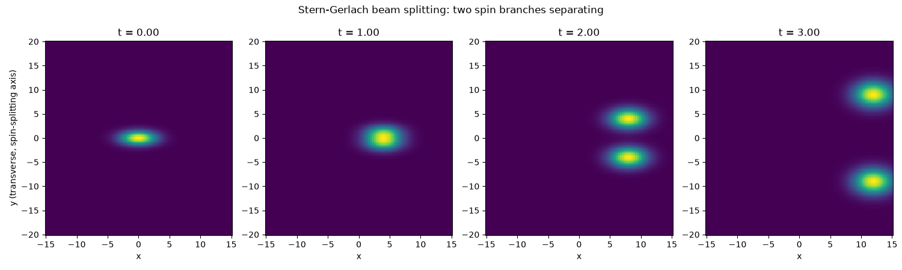

Note
Go to the end to download the full example code.
The Stern-Gerlach experiment#
A beam of spin-1/2 particles passes through an inhomogeneous magnetic field
\(B_z(y) \approx B_0 + y\,\partial_y B_z\). The spin-dependent force
\(F_y = \pm\mu\,\partial_y B_z\) pushes the two spin-projection branches
apart transversely while the beam drifts along \(x\), splitting a single
incoming beam into two spatially resolved lobes – Stern and Gerlach’s 1922
demonstration that an atom’s magnetic moment (and hence angular momentum) is
spatially quantized rather than continuously distributed.
SternGerlach implements the
standard textbook semiclassical treatment: each spin branch is an
independent Gaussian wavepacket under a constant transverse force, exactly
solvable via
GaussianDispersion.
import matplotlib.pyplot as plt
import numpy as np
from physicskit.quantum.chapters.spin import SternGerlach
from physicskit.quantum.visualizers.wavefunctions import animate_density_2d
sg = SternGerlach(mu=2.0, grad_B=1.0, sigma0=1.0, sigma_x=2.0, k0=4.0)
x = np.linspace(-15, 15, 100)
y = np.linspace(-20, 20, 140)
times = np.array([0.0, 1.0, 2.0, 3.0])
stack = sg.joint_density_stack(x, y, times)
def y_spread(density_xy):
marginal_y = density_xy.sum(axis=0)
marginal_y /= marginal_y.sum()
mean_y = np.sum(y * marginal_y)
return np.sqrt(np.sum((y - mean_y) ** 2 * marginal_y))
for t, density in zip(times, stack):
print(f"t={t:.2f}: transverse spread of the joint beam = {y_spread(density):.4f}")
t=0.00: transverse spread of the joint beam = 1.0000
t=1.00: transverse spread of the joint beam = 1.5000
t=2.00: transverse spread of the joint beam = 4.2426
t=3.00: transverse spread of the joint beam = 9.1788
The beam splitting into two lobes as it propagates#
fig, axes = plt.subplots(1, len(times), figsize=(15, 4.5))
for ax, t, density in zip(axes, times, stack):
ax.pcolormesh(x, y, density.T, shading="auto", cmap="viridis")
ax.set_title(f"t = {t:.2f}")
ax.set_xlabel("x")
axes[0].set_ylabel("y (transverse, spin-splitting axis)")
fig.suptitle("Stern-Gerlach beam splitting: two spin branches separating")
fig.tight_layout()

An animated view of the splitting#
animate_density_2d()
renders the (real-valued, incoherent) joint density frame by frame as the
two spin branches separate transversely.
t_anim = np.linspace(0, 3.0, 60)
stack_anim = sg.joint_density_stack(x, y, t_anim)
anim = animate_density_2d(x, y, stack_anim, times=t_anim, phase_colored=False)
# anim.save("stern_gerlach.gif", writer="pillow", fps=15)
Total running time of the script: (0 minutes 3.491 seconds)